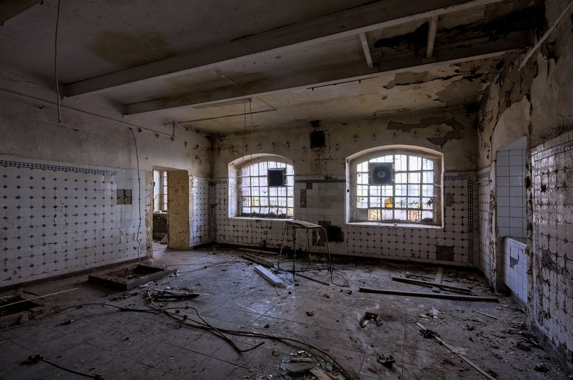
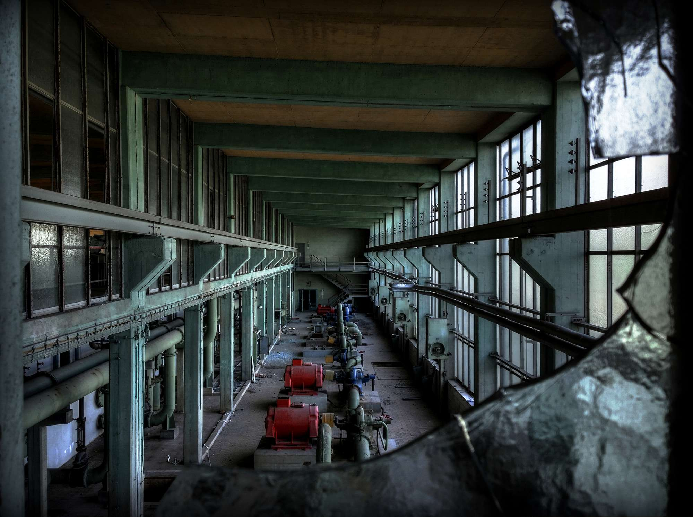
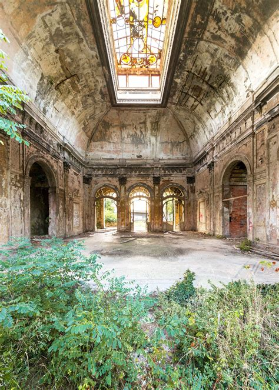
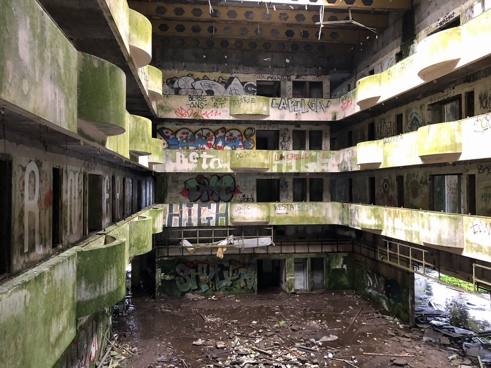

Uchwycone w obiektywie
Zabieram stamtąd tylko zdjęcia. Zobacz ujęcia z moich ostatnich wejść do opuszczonych obiektów.




Zabieram stamtąd tylko zdjęcia. Zobacz ujęcia z moich ostatnich wejść do opuszczonych obiektów.



